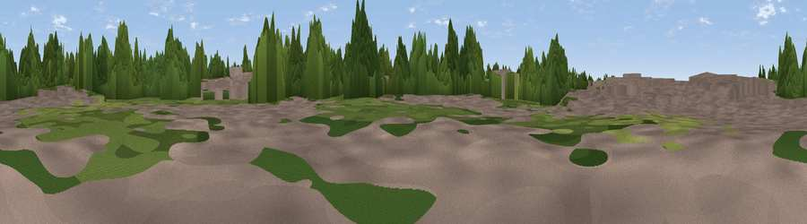

Viewpoint near Moston
#43973 in England · top 91% of its area beats it · near Moston · footpathWhere it is
The exact computed spot (SJ 41190 70349). Click the marker for map links.
Public access: a public right of way passes within 26 m of this spot. Computed from Natural England's CRoW access layer and OpenStreetMap rights of way — not the legal definitive map. Always verify locally.
The view, rendered

A 360° render of this exact spot computed from the terrain model, tree cover and land cover — summer colours, afternoon light, calibrated against photographs of famous viewpoints. Real trees, hedges and buildings will differ in detail.
The panorama
Grey silhouette: terrain skyline in each direction (720 bearings, Earth curvature and refraction included). Dashed green: skyline with trees (+15 m) and buildings (+8 m) as obstacles. Blue strip: how far the ground is visible on each bearing.
Where the view opens
Wedge length = distance to the farthest visible ground on that bearing (vegetation-aware). Rings at 10, 25 and 50 km.
What fills the view
40% woodland · 33% built-up · 23% grassland · 4% cropland
Angular shares of the visible panorama (visual magnitude), not map area. Landscape diversity 0.52 (0–1 Shannon).
Key numbers
More beautiful places nearby
The staircase of upgrades: each row has a higher view potential than everything closer. Driving times are estimates from straight-line distance, calibrated against real road routing — check an actual route before setting out.
| Place | Direction | Drive | Score |
|---|---|---|---|
| Viewpoint near Stoak | ENE · 3 km | ~8 min | 47.5 |
| Viewpoint near Ellesmere Port | NNW · 9 km | ~17 min | 55.5 |
| Helsby Hill | ENE · 9 km | ~19 min | 74.6 |
| Viewpoint near Harthill | SSE · 18 km | ~31 min | 80.5 |
| White Brow | NNE · 49 km | ~70 min | 82.9 |
| Viewpoint near Halfway House | S · 58 km | ~80 min | 83.3 |
| Viewpoint near Little Wenlock | SSE · 66 km | ~88 min | 84.2 |
| The Wrekin | SSE · 66 km | ~89 min | 85.0 |
53.22691, -2.88239 · source: osm viewpoint · position refined by local search. Computed location — check access rights before visiting.